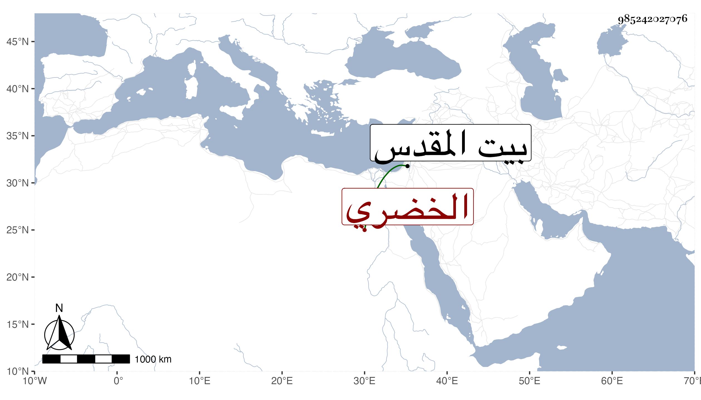

0902Sakhawi.DawLamic.ITO20230111-ara1.EIS1600.985242027076
Biography ID: 985242027076
1060
ايتمش الخضري الظاهي برقوق كان من مماليكه ثم صار من جملة الدوادارية في أيام ابنه الناصر فرح ثم تأمر عشرة في أيام المؤيد إلى أن استقر في الاستادارية الكبرى أوائل أيام الأشرف فلم ينتج فيها وعزل بعد يسير واستمر على إمرته مدة إلى أن أصيب في جسده ببياض بحيث كان يستره بالحمرة فأخرجها الأشرف عنه ودام بطالا بل أخرج إلى القدس وغيره فلما تسلطن الظاهر داخله وقرب منه جدا ثم لم يلبث أن أبعده ونفاه إلى القدس أيضا ثم رسم بعوده فلزم داره إلى أن سقط عليه جدار فأخرج من تحته مغشيا عليه فعاش بعد قليلا ومات في رجب سنة ست وأربعين ودفن بتربة الأمير قطلوبك في الصحراء وكان كما قال شيخنا قارئا للقرآن محبا في حملته كثير البر بهم مع شر فيه وبذاءة لسان وارتكاب أمور فيما يتعلق بالمال ولذا قال العيني إنه لم يكن مشكور السيرة .
